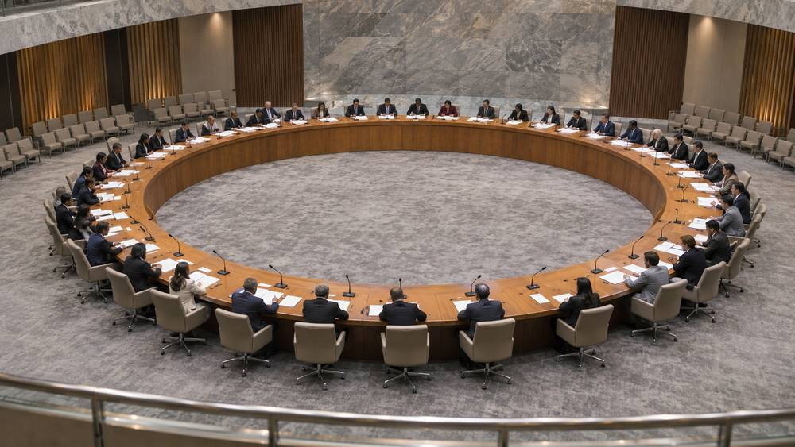

한국 탄소시장연합 가입, 회원국 13개국으로…상쇄배출권 공통 원칙 논의에 참여

11월 16일 COP31 계기 고위급 회의서 가입 발표 / 연합 업무계획은 산정·보고·검증, 탄소회계, 파리협정 제6조 연계 등 5대 영역
김성환 기후에너지환경부 장관이 11월 16일(현지 시각) 튀르키예 안탈리아에서 열린 제31차 유엔기후변화협약 당사국총회(COP31) 계기 의무탄소시장 개방연합(OCCCM, 이하 탄소시장연합) 고위급 회의에서 한국의 회원국 가입을 발표해, 연합 가입국은 한국을 포함해 13개국이 됐다.
탄소시장연합은 2025년 COP30에서 브라질이 제안해 2026년 5월 7일 이탈리아 피렌체에서 설립된 자발적 협력체로, 처음 2년은 브라질이 의장국, 중국과 유럽연합(EU)이 공동의장국을 맡는다. 배출권거래제나 탄소세 같은 의무 탄소시장·탄소가격제를 운영하거나 준비 중인 국가나 지역경제통합기구가 회원이 될 수 있고, 회원은 고위급 회의에서 투표권을 갖는다.
9월 14일 중국에서 열린 2차 고위급 회의가 채택한 업무계획에는 산정·보고·검증(MRV, 배출량을 재고 알리고 확인하는 절차) 체계 정리, 탄소회계 공통 정의, 파리협정 제6조와 이어지는 '고신뢰성 상쇄배출권 공통 원칙' 수립 등 5대 업무영역이 담겼다. 김 장관은 가입 발언에서 한국이 2015년부터 국가 단위 배출권거래제를 운영하며 국내 온실가스 배출량의 70% 이상을 이 제도로 관리한다고 소개했다. 기후부 자료에 따르면 한국의 가입은 2026년 6월 유럽연합이 한-EU 정상외교 성과사업으로 제안한 데 따른 것이다.
시민에너지 관점
탄소시장연합의 5대 업무영역은 산정·검증 방법, 탄소회계, 상쇄배출권 규칙처럼 정부와 대량 배출 기업이 주로 다루는 일로 채워져 있다. 그러나 본지가 11월 18일 보도한 지방정부 감축인지 예산서 지침처럼 탄소 감축을 셈하고 책임지는 일은 이미 지역으로 내려오고 있다. 탄소에 값을 매기는 시장이 커질수록, 배출을 줄인 주민과 마을이 그 값을 나눠 받는 구조가 함께 만들어져야 한다. 정부는 연합에서 상쇄배출권 공통 원칙을 논의할 때 주민 소유 재생에너지와 에너지협동조합의 감축 실적이 공정하게 셈해지도록 목소리를 내야 한다.
출처: 기후에너지환경부 2026-11-16 보도자료 「대한민국, 탄소시장연합 회원국 공식 가입… 국제 탄소시장 협력 본격 참여」(붙임1 개요·붙임2 선언문 주요 내용·붙임3 업무계획) 원문 보기
출처: 정책브리핑(기후에너지환경부) 2026-11-17 한국, '탄소시장연합' 회원국 공식 가입…"탈탄소 녹색문명 선도" 원문 보기